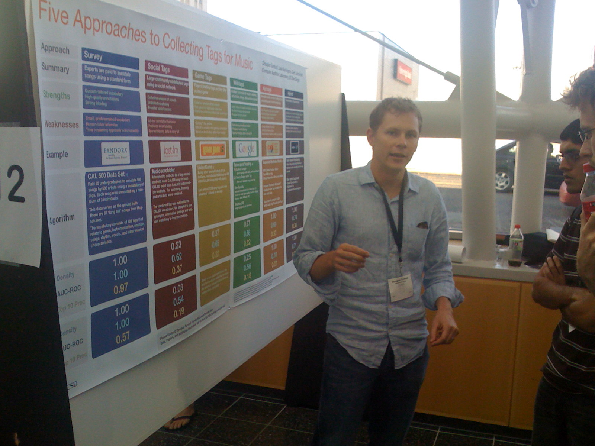
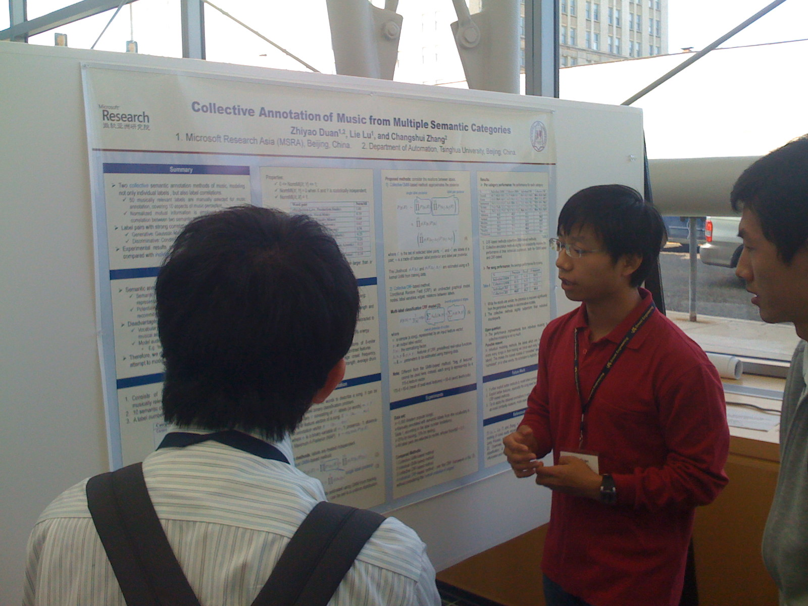
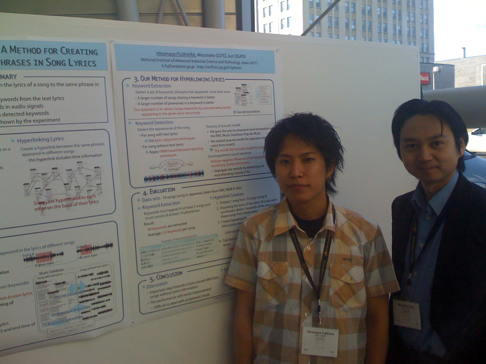
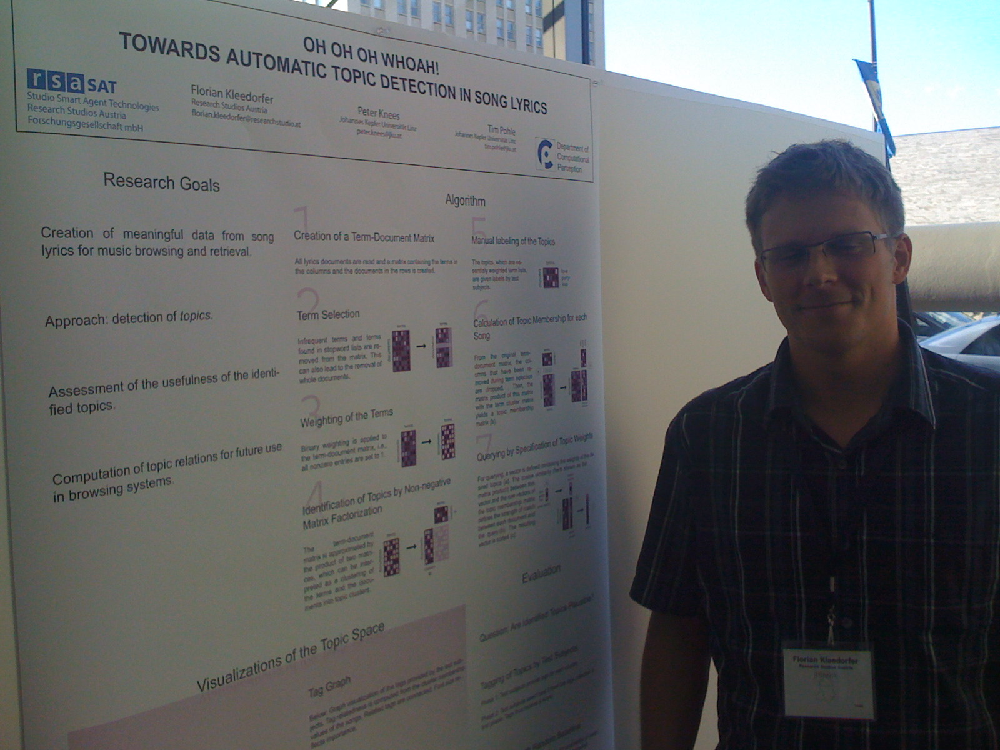

ISMIR Day 1 Poster session

There were many, many posters - on fascinating topics and I had lots of great conversations with the authors. Here are some highlights (these are posters that I found particularly interesting, mainly because they overlap some of the work we are doing in our lab)
Uncovering Affinity of Artists to Multiple Genres From Social Behaviour Data
by Claudio Baccigalupo, Justin Donaldson and Enric Plaza.The folks from strands have made some interesting data available that is worth downloading. They also have developed a pretty interesting artist similarity metric that is extremely easy to collect and seems like it gives very good similarities.

The Quest for Musical Genres: Do the Experts and the Wisdom of Crowds Agree?
by Mohamed Sordo, Oscar Celma, Martin Blech and Enric GuausI find this analysis to be fascinating - Mohamed and Oscar are trying to determine how expert-based annotation (such as you find at a site like MP3.com) compares with social, wisdom-of-the-crowds style annotation. I hope they continue this work to see if social methods have higher agreement than independent experts.

Five Approaches to Collecting Tags for Music
Douglas Turnbull, Luke Barrington and Gert Lanckriet
The poster from the UCSD folks was a real crowd pleaser - not only did the poster look great (as if it were professionally designed), the poster stimulated lots of conversations and debate. At the end of day, Doug could barely talk his voice was so hoarse. 
Collective Annotation of Music From Multiple Semantic Categories
by Zhiyao Duan, Lie Lu and Changshui ZhangThis was some really interesting work from Microsoft Research Asia on autotagging. 
Hyperlinking Lyrics: A Method for Creating Hyperlinks Between Phrases in Song Lyrics
by Hiromasa Fujihara, Masataka Goto and Jun OgataHiromasa is doing some really interesting work with lyrics. His system will try to find related lyrics in songs using audio. This requires separating the voice from the rest of the music, using an acoustic model of the voice appropriate for singers. He is currently getting about 30% accuracy which is a very good result considering how difficult the problem is.
Also, Masataka is a very good professor. Many times I saw him working the room to bring people to his students' posters.

Oh Oh Oh Whoah! Towards Automatic Topic Detection in Song Lyrics
Florian Kleedorfer, Peter Knees and Tim PohleFlorian's research on the clustering lyrics for topic detection is really interesting. Be sure to ask him to show you his demo. (And Florian likes to close his eyes when he sings, just like Hugh Grant in About a Boy)
